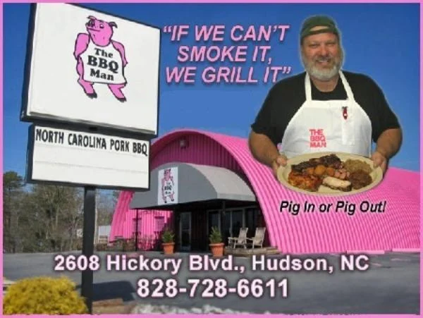
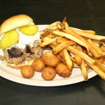
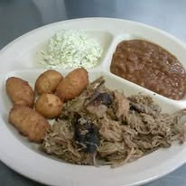
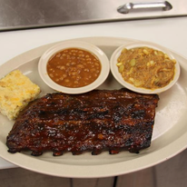
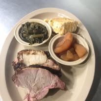

"Best Butts in Town"
Menu
Testimonials
Google Maps
The BBQ Man
If you are headed to the mountains by way of Hwy 321 when you see pink stop! You're at The BBQ Man's Restaurant!"
Sign up

Some random information

Classic Pulled-Pork Sandwich and Fries Combo

Large Pork Plate with Beans and Slaw!

Baby-back Ribs with Beans and Stew!

Sliced Pork Loin with Baked Apples, Collards, and Cornbread!